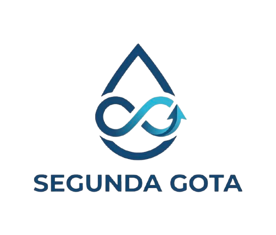

Conoce el respaldo legal y técnico que garantiza nuestra tecnología.
🏢 Naturaleza Corporativa
Somos una Sociedad por Acciones Simplificada (S.A.S.) legalmente constituida en México. Nos especializamos en infraestructura hídrica sustentable, operando bajo un modelo de suministro de agua como servicio (WaaS).
📜 Nuestro Compromiso Normativo
NOM-001-SEMARNAT-2021: Cumplimiento estricto de los límites permisibles de contaminantes. Agua 100% segura y libre de olores.
NOM-003-SEMARNAT-1997: Reúso seguro del agua tratada en servicios sanitarios con contacto indirecto.
NOM-018 y NOM-004-STPS: Riguroso sistema de seguridad laboral en el manejo de sustancias y maquinaria.
Auditoría Continua: Monitoreo mensual avalado por laboratorios con certificación EMA.
👥 El Equipo
Alan Avila - Dirección Ejecutiva y Estrategia Corporativa (CEO)
Michel Alexis De la Palma - Operaciones e Innovación Hídrica (CTO)
Fabian Aaron Morales Reyes - Inteligencia Financiera y Viabilidad (CFO)
Víctor Saúl Vargas Hernández - Desarrollo de Negocios y Relaciones Institucionales (CMO)
Segunda Gota - Impacto Hídrico

Impacto en la Facultad
Gracias a nuestra PTAR modular, hemos logrado salvar:
0Litros de Agua Potable
Cada gota cuenta una nueva historia.
¿Por qué usar agua tratada?
💧 Estrés Hídrico
Nuestras instalaciones enfrentan escasez. Usar agua potable en sanitarios es un lujo insostenible. Al reciclar, aliviamos la red municipal.
♻️ Economía Circular
El agua residual se trata física y biológicamente in-situ. Pasa de ser un desecho a un recurso útil e inodoro.
📜 Calidad Garantizada
Cumplimos estrictamente con la NOM-001 de SEMARNAT. El agua que usamos es biológicamente segura y perfecta para fluxómetros.